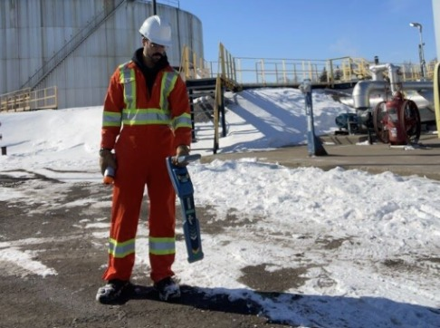
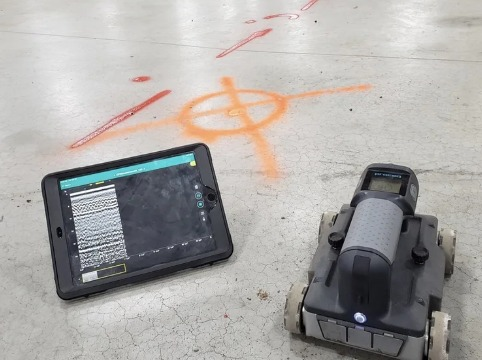
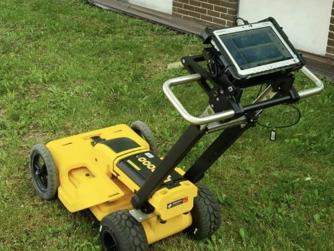
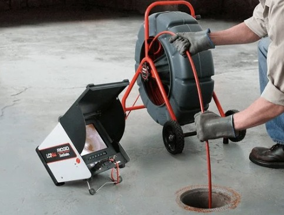
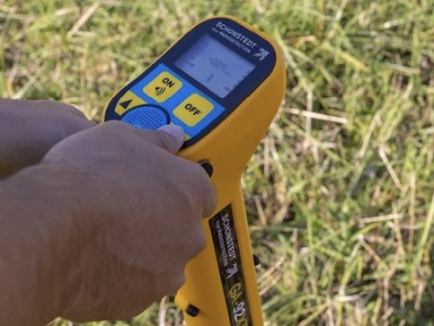
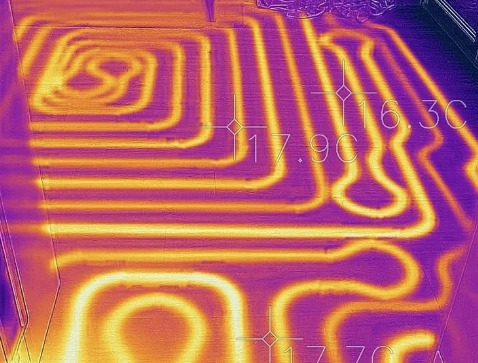

Chaque grand projet commence par ce qu'on ne voit pas.
Avant de commencer les travaux, certaines conduites ou structures doivent être localisées.
Sécuri-Terre offre des services spécialisés de détection souterraine et de géoradar.
Services de Sécuri-Terre

Détection géoradar dans le béton

Détection géoradar à l’extérieur

Inspection de drain par caméra

Localisation avec détecteur magnétique

Inspection avec caméra thermographique
À quel moment faire appel à un spécialiste
- Excavation et aménagement extérieur
- Construction commerciale ou industrielle
- Travaux dans une dalle de béton
- Rénovation d’un bâtiment
- Problèmes de drainage
- Recherche d’éléments métalliques enterrés
- Vérification thermique de certaines installations
Un projet commence toujours par une bonne préparation.
Découvrez comment Sécuri-Terre peut vous aider à localiser les éléments cachés avant le début des travaux.